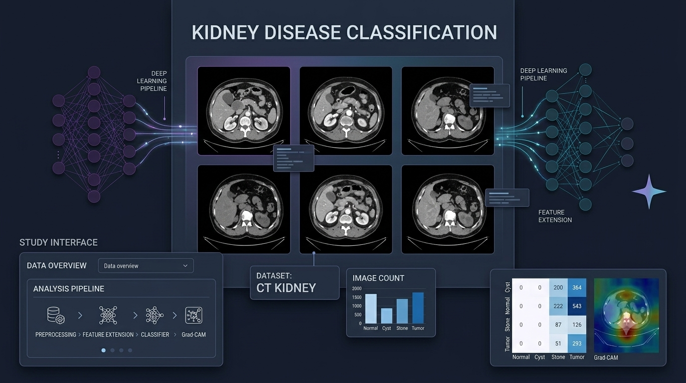
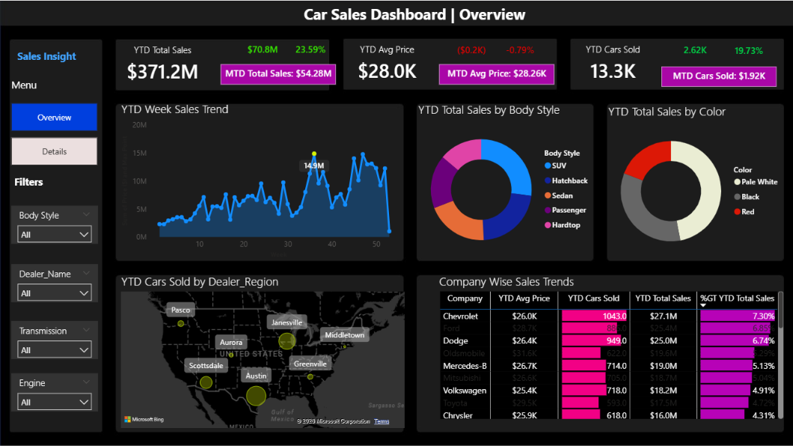
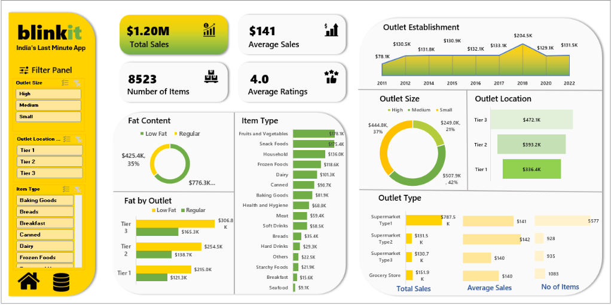
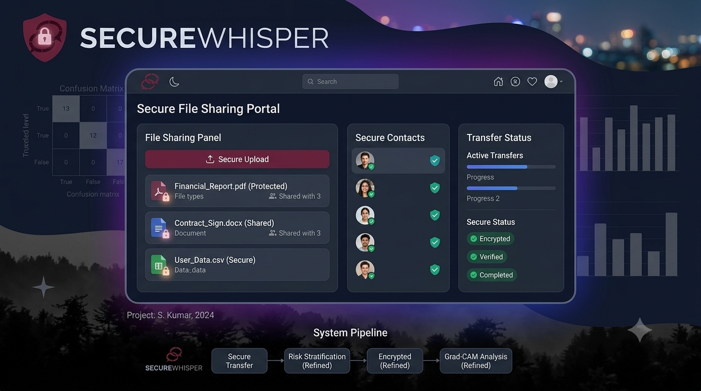
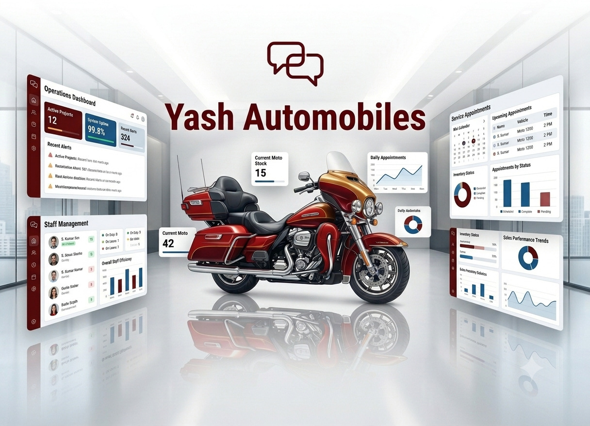
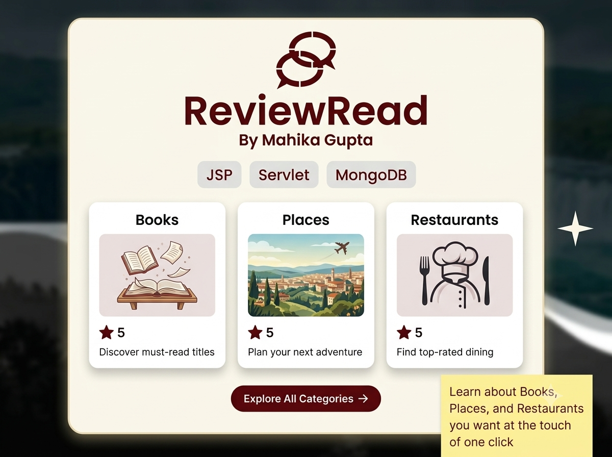
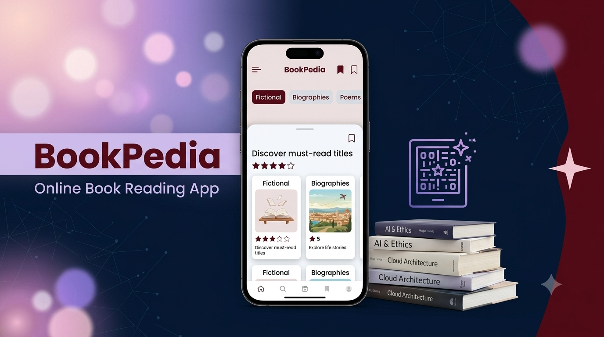

AI Research
Kidney Disease Classification
Deep learning research exploring the classification of kidney CT images to distinguish normal kidneys, cysts, tumours and stones.
DATA ANALYTICS · DATA SCIENCE · Artificial Intelligence · Machine Learning
I turn complex data into actionable insights through analytics, machine learning and artificial intelligence.

GET TO KNOW ME
I'm a Data Analyst with a Master's in Data Science & AI, passionate about transforming complex data into actionable insights and building intelligent, data-driven solutions.
July 2026 – Present
Crimson Interactive
Building automated data pipelines, predictive models and dashboards to support data-driven decisions.
INTERNSHIP · November 2025 – June 2026
Crimson Interactive
Building automated data pipelines, predictive models and dashboards to support data-driven decisions.
Postgraduate · 2024 – 2026
CGPA: 8.81
Focused on data science, machine learning, artificial intelligence and predictive modelling.
Undergraduate · 2021 – 2024
CGPA: 9.38
Built a foundation in programming, databases and computer science.
MY WORK
Explore my work across data analytics, machine learning, AI research and application development.

Deep learning research exploring the classification of kidney CT images to distinguish normal kidneys, cysts, tumours and stones.

Interactive dashboard exploring car sales trends, revenue and performance metrics to support data-driven business decisions.
View Project ↗
Sales analysis highlighting product performance, outlet trends and business insights through data analysis and visualization.
View Project ↗
A secure file-sharing application focused on privacy and encrypted communication.
View Project ↗
An automobile-focused project designed to present business information and make key details easier for customers to explore.
View Project ↗
A review-focused project built around presenting user feedback in a clear and accessible format.
View Project ↗
An online book-reading app where users can explore book categories, read and download books, save favourites, track completed books and submit feedback.
View Project ↗A salon management website for exploring hair, skin and spa services, booking appointments, viewing prices and collecting customer feedback, with separate customer, staff and admin functions.
View Project ↗MY TECHNICAL EXPERTISE
Technologies, libraries and analytical methods I use to transform data into insights and build intelligent solutions.
RECOGNITION & LEARNING
Professional recognition, technical certifications and learning experiences that continue to strengthen my analytical skills.
2026 · Achievement
Crimson Interactive
Recognized for professional contribution and impact.
2025 · Job Simulation
Tata iQ · Forage
Practical exposure to data analytics workflows and generative AI.
View Certificate ↗2025 · Job Simulation
Boston Consulting Group · Forage
Hands-on learning experience in data science and analytical problem-solving.
View Certificate ↗2024 · Certification
Data Analytics
Data modelling, DAX and dashboard development.
2024 · Certification
Data Science
Pandas, NumPy, Matplotlib and predictive modelling.
2024 · Certification
Data Analytics
Data cleaning, exploratory data analysis and visual storytelling.
2023 · Leadership
College Fest · Own College & Jai Hind College
Supported event coordination, leadership and team management.
2022–2024 · Membership
Student Development
Conducted surveys on women's status and student career choices, developing analytical and social research skills.
LET'S CONNECT
Have an opportunity in data analytics, data science or AI? I'd love to connect and discuss how I can contribute.